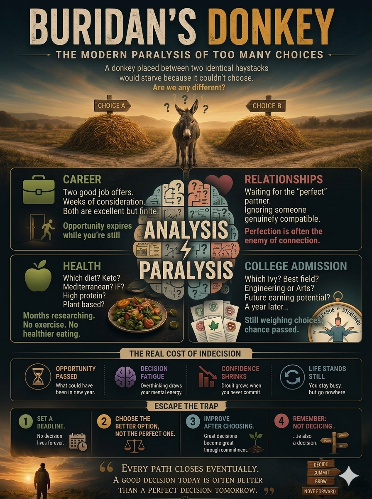

Jean Buridan never wrote about a donkey. The 14th-century philosopher was working through Aristotle's question: can a rational will, faced with two options of exactly equal merit, move at all? Later critics sharpened it into the image that stuck — a donkey, equally hungry, at the exact midpoint between two identical bales of hay, starving for lack of a reason to prefer either.
It's the most accurate diagnosis available for a stalled decision. Not "too many options." Not "not enough data." A tie no amount of analysis can break — because the analysis produced it.

01The Donkey Never Left
Give the paradox modern clothes and it shows up in the same four places, over and over:
Two offers, comparable comp and scope. A spreadsheet gets built to force a winner; it returns a number within 2% either way. One offer expires while the other is "under consideration."
Waiting for a partner who clears every criterion, while someone genuinely compatible gets treated as a placeholder. The list keeps growing because no one on it has ever lost.
Keto or Mediterranean, fasting or high protein. Months go into researching the optimal plan — no exercise, no change to how anyone eats. The research substitutes for the decision.
Engineering or the arts, prestige versus fit. A year of deliberation later, the deposit deadline has passed on both — the calendar chose, not the applicant.
Notice the pattern: paralysis shows up after analysis starts, not before. The donkey had perfect information. It didn't produce a decision — it produced the tie.
02Why More Data Doesn't Help
Herbert Simon, who coined satisficing, argued decision-making was never built for optimization. We evaluate until an option clears "good enough," and take it. Optimizing is what a calculator does. Satisficing is what a person does when they still have to go home for dinner.
Some environments punish satisficing and reward the appearance of optimizing. Enterprise architecture is a clean example: nobody gets criticized for a 40-slide vendor comparison, but people get asked why they picked without one. So the deck grows — cost, latency, ecosystem, hiring pool, lock-in risk. Rarely said out loud: adding comparison axes to a close decision doesn't resolve it. It adds more ties.
Five axes, same tie — just measured more expensively. Barry Schwartz's paradox of choice found the same shape in individual psychology: past a point, more options produce more regret, not better decisions. The number of options was never the constraint. The absence of a tiebreaker was.
03What Frozen Decisions Cost
The spreadsheet feels like progress. It isn't neutral — every week it stays open has a price, rarely itemized:
Opportunity Passed
What was on the table stopped being on the table while it was still being weighed.
Decision Fatigue
Every hour re-weighing the same two options draws down the budget the decision itself needs.
Confidence Shrinks
Doubt compounds the longer a choice stays open — each undecided day reads as evidence it's hard.
Life Stands Still
Staying busy re-analyzing isn't moving. The clock keeps running on everything the decision blocks.
04A Problem Older Than Any Answer
The frozen decision-maker isn't modern. Most wisdom traditions independently landed on the same fix — not "compute harder," but "stop requiring a guarantee before you act."
Epictetus's dichotomy of control: sort the effort (yours) from the outcome (never yours), and stop spending will on the second.
Attachment to a result — not the choosing itself — is the source of suffering. Acting skillfully and releasing the craving for a particular outcome are separate disciplines.
Wu wei, effortless action: forcing a decision through exhaustive calculation is resistance to the moment, not diligence.
"You have a right to the action, never to the fruits" (2.47) — to a warrior who has, for very different reasons, also frozen mid-decision.
Simon's satisficing and the reversible/irreversible framing from modern management — the secular version, in spreadsheets instead of scripture.
Strip the theology and the mechanism is identical: the paralysis was never about which option was better. It was about needing proof of "better" — proof a genuine tie can't supply.
The donkey's real error isn't indecision. It's believing a decision needs a provably superior outcome before it can be made. Remove that requirement, and equidistance stops being a trap — it becomes irrelevant. If both haystacks are genuinely equal, the choice was never won on the merits. It's won on a deadline, a bias toward motion — the walking, not the destination.
05Escape the Trap
This isn't an argument against analysis — most decisions aren't ties, and analysis is what reveals that. This is for the residue: the close calls that survive the spreadsheet, still unresolved.
Set a Deadline
An open-ended decision behaves like the donkey's midpoint: perfectly stable, going nowhere. A fixed date converts an infinite search into a bounded one.
Choose Better, Not Perfect
Satisfice on purpose. Needing a third axis to separate two options confirms a genuine tie — it isn't evidence one more benchmark will resolve it.
Improve After Choosing
Decisions get made great through commitment and iteration afterward, not certainty beforehand. Treat the choice as a first draft, not a final verdict.
Not Deciding Is Also Deciding
Deferral isn't neutral — it's a choice for the status quo, made by default instead of on purpose, usually at the worst possible moment.
The part worth sitting with
Every path closes eventually — the second offer, the other haystack, stop being available whether or not a choice was made. A good decision today outperforms a perfect one that arrives after the option is gone. The donkey didn't need a better haystack. It needed permission to walk toward one without a guarantee.